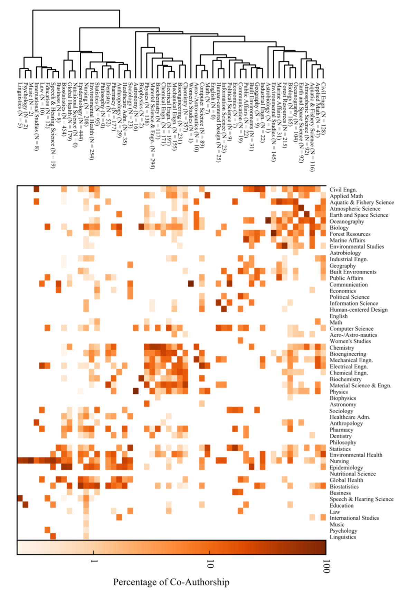

Publications

Measuring scientific buzz
Kishore Vasan and Jevin West
Towards the proceedings of iConference 2019 (Under Review)

Data Scientist
im a data enthusiast who loves telling stories using data.
I am a undergraduate student at University of Washington pursuing Informatics. My core strengths and interests include network analysis, data visualization, regression analysis and natural language processing. I work at DataLab as an undergraduate researcher. My research work focuses on Scientometrics: Science of Science. I analyze large scale bibliometric data on scholarly literature and examine the progress of science across different entities. I am fortunate to be advised by Dr. Jevin West, Assistant Professor, Information School.
Using the power of a modern language.
Convert messy confusing data into informative visualization.
Getting things rolling with implementing the entire pipeline.
Curiosity arises from continuosly thinking about the 'key' takeaway from your project.
Analyzing data to gain insights.
Leveraging quantitative science to improve power of results.
Creating novel methods to solve key problems in research at a university lab.
This year at KDD, network embedding topic dominated most of the papers and talks. In this blog post, I write about network embedding and my key takeaways from attending KDD 2018.
{kind=link}